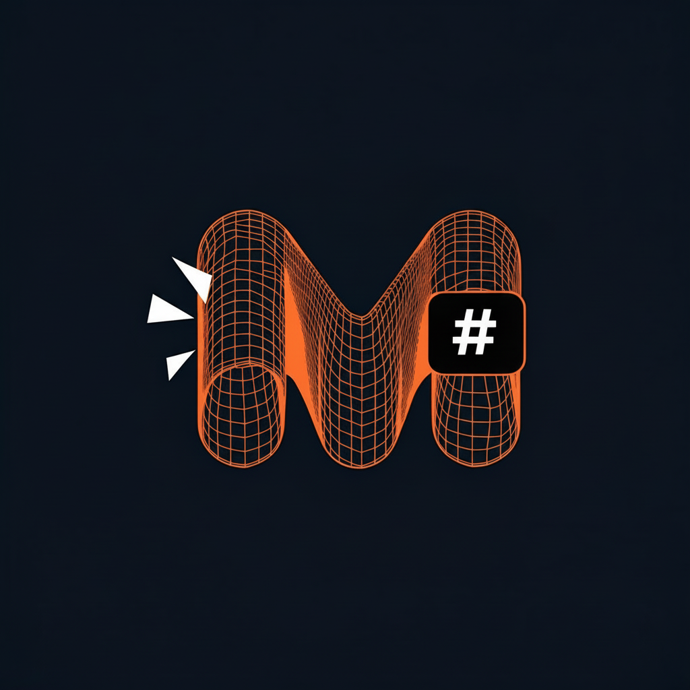

A native markdown viewer with diagram support. Live reload, multiple themes, and beautiful rendering. Built with Rust.
Available for macOS, Windows, and Linux
Tables, task lists, footnotes, strikethrough, and all GitHub Flavored Markdown extensions rendered beautifully.
Mermaid and PlantUML diagrams render inline. Flowcharts, sequence diagrams, class diagrams, and more.
Inline SVG code blocks and SVG file references render natively with theme-aware colors.
Edit your markdown in any editor. MdViewer watches the file and refreshes instantly on save.
Auto, Light, Dark, Modest, and Modest Dark themes. Configurable fonts and sizes with live preview.
Click .md links to navigate between documents. Multi-window support for viewing several files at once.
Native performance, no Electron.
Grab the latest release for your platform.